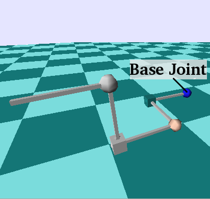
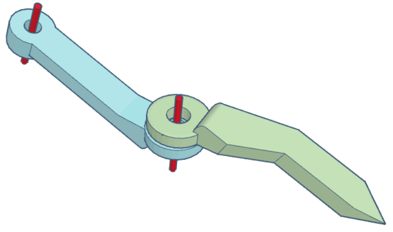
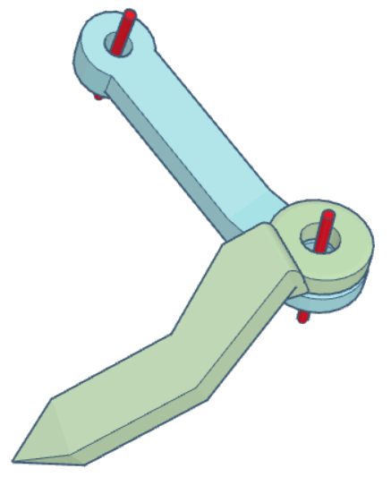
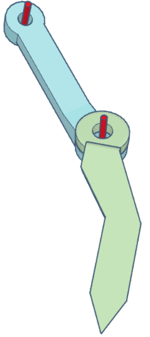
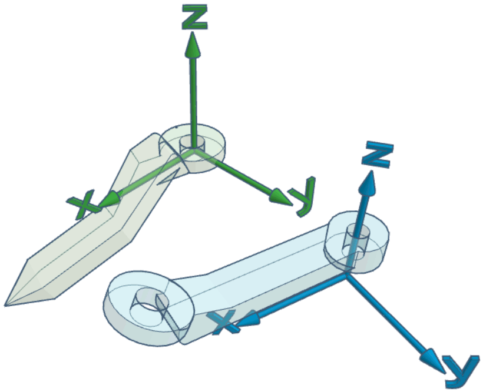
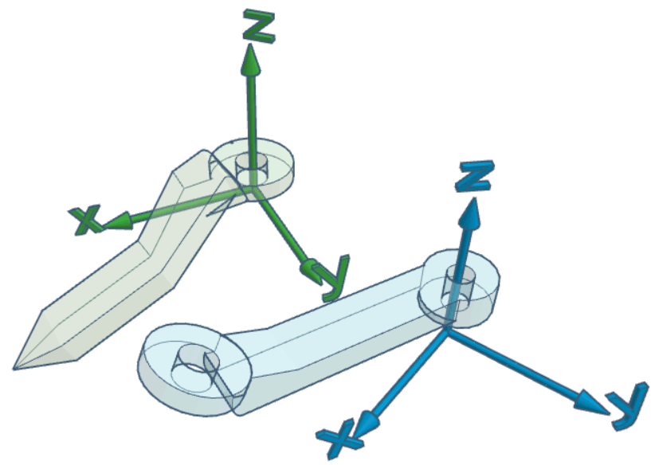
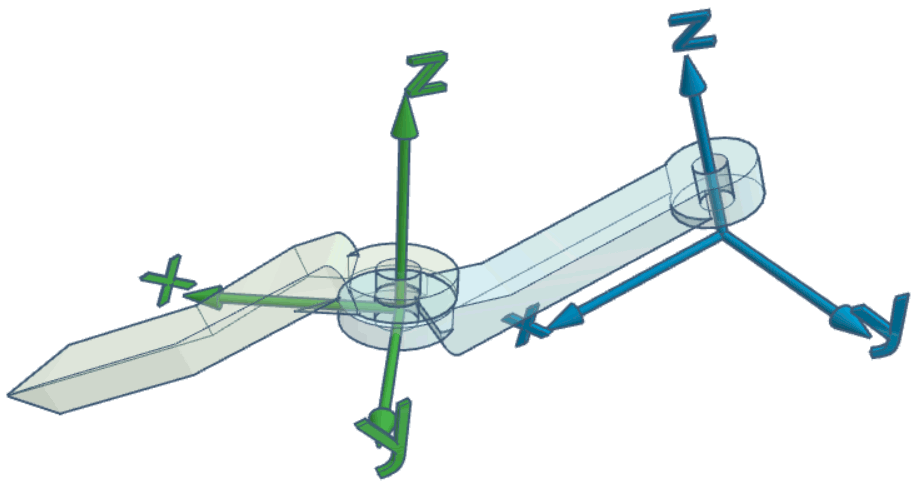
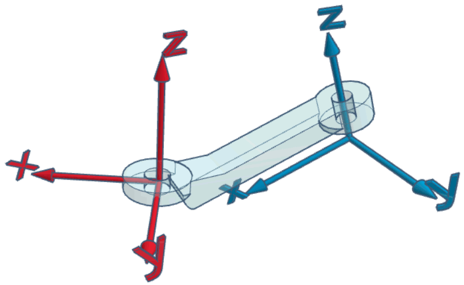
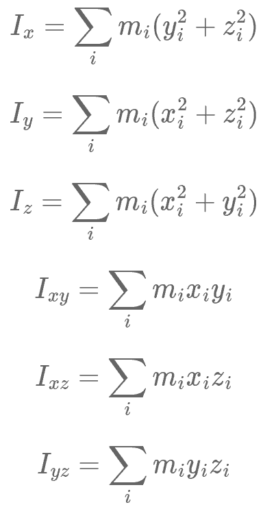
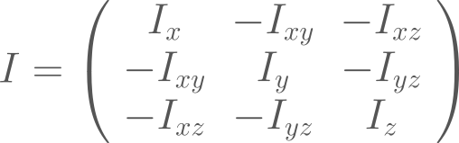

The kinematics/dynamics model of an articulated robot is the primary input of RobCoGen
This page documents the meta-model assumed by RobCoGen, and the procedure
to make a conforming model with the Kinematics-DSL (or "KinDSL",
where DSL stands for Domain Specific Language). The KinDSL is a text
format with a simple syntax tailored for the job.
RobCoGen also accepts robot models in the URDF format.
The URDF essentially conforms to the same meta-model
KinDSL overview
The logical structure of a file ("document", or "model") is the following:
Robot <name>
<link 0 spec> // the robot base
<link 1 spec>
//...
<link n spec>
<joint 1 spec>
//...
<joint n spec>
Any link block contains an id, the inertia properties, and a possibly empty
list of children links. The geometrical constants of the robot are encoded in
the joint parameters, which are extensively explained below.
The format allows to model any kinematic tree, a
mechanism where each rigid body has one and only one parent
(except the base), and may have zero or multiple children.
Example
Here is the
model
for my "Fancy" robot, the example included in the
distribution of RobCoGen:

An illustration of the "Fancy" robot, taken from a simulation (SL) using
RobCoGen-erated code. Spheres represent revolute joints, cubes prismatic ones
Geometry
This section walks you through the procedure required to model an articulated
mechanism with the Kinematics-DSL. It explains how to place the coordinate
frames and how to measure lengths and angles. The convention about the
placement of reference frames (or "coordinate frames") is definitely the aspect
that can be most confusing, and that is typically not documented enough. I tried
to avoid such a mistake.
Terminology first:
A kinematic-pair is a pair of links connected by a joint
The links of a pair, in relation with the joint, are called
predecessor and successor.
The links of a pair, in relation with each other, are called parent and
child.
We say that a parent/predecessor/joint supports the child/joint/successor;
the opposite relation is supported by.
Basic modeling
The following applies to kinematic trees (no loops), with one-dof joints only.
Ordering. Choose the topological ordering for your
robot: which link is the base, which are the parents/children, etc.
This choice induces a total ordering with respect to the relation
supports/supported by
Zero configuration.
Choose the configuration of the robot you wish to identify with the zero
joint-status vector; consider the robot assembled, but neglect joint limits.
That is, the zero configuration must comply with the holonomic constraints of
the real joints, but it need not respect the range of motion; it might very
well be unreachable by the actual
robot.1
Note that no reference frame was mentioned yet.
Link-frames.
Consider each individual link (in isolation), and attach a Cartesian frame to
it. The Z axis must lie along the axis of the supporting joint (e.g. the Z
axis of a forearm is the elbow axis), but you are otherwise free to choose the
pose.2
The link-frame of the base link of the robot can be placed anywhere.
More
The link-frame is the reference used for any quantity related to the link itself
(e.g. the center of mass, the pose of other attached frames, the location of
the joint axis, etc.).
Joint-frames.
Consider the robot assembled, freezed in the zero configuration. For each joint
of the robot, attach a new frame onto its predecessor, in the same pose of the
frame of its successor (i.e. the two frames coincide). This is the joint-frame.
Geometrical properties.
The pose of any joint-frame relative to the predecessor-frame is
a geometrical constant of the robot. This pose is represented in the
joint sections of a Kinematics-DSL model.
Example
Let's consider a simple kinematic pair, as the extension to a general tree would
simply require to reiterate the same steps.
This screenshot shows the links and the ideal joint axes (in red):

The corresponding section of a model would look like this:
Ordering. We choose the blue link to be the parent.
Therefore it is the predecessor of the joint between the two links.
Zero configuration.
The zero configuration is an entirely free choice,
pick an intuitive one in the context of your application.
Here are two examples:


Link-frames. The figures below illustrate a couple of
examples: the Z axis always lies on
the joint axis, but the frame is otherwise free to "move"


The Z axis could also be pointing in the opposite versus; the right hand
rule on the Z axis determines the direction of rotation which corresponds to
an increase/decrease of the joint status (choose the versus of Z to fix
the preferred convention).
Also, note that all combinations between the previous
and these screenshots are possible, i.e., the choice of the zero configuration
is independent of the choice of link frames.
Joint frames.
At this point, the zero configuration and
the link frames have been chosen. The joint frame coincides with the successor frame,
when in the zero configuration:


The joint frame is attached to its
predecessor, and it is in the same pose as the successor frame
when the joint state is 0.
There is no need for the origin to coincide with a material point of the link,
similarly as for the link frame.
Geometrical properties.
The relative pose of the red frame with respect
to the blue frame is a constant that must be included in the robot model. The
previous example would correspond to something like this:
r_jointTheJoint {
ref_frame {
translation=(...,0.0,...)// some translation along X and Zrotation=(0.0,...,0.0)// rotation Y
}
}
Where the dots represent a non-zero value. The complete specification of the
format for the joint frame is in the next section.
Pose of the joint frame
The ref_frame block within a joint block
defines the relative pose of the
joint frame with respect to the predecessor frame (which is a link frame). The
pose is represented with a translation vector and with three Euler angles,
representing three successive, intrinsic rotations about the X, Y and Z axis.
The rotations are applied after the translation.
Distances are in meters, angles in radians.
Intrinsic rotations
The rotation parameters in rotation = (..) are interpreted as successive
rotations about the X, Y and Z axis of the rotating frame. The first number
rx is the amount of rotation about X, the second is the rotation about the Y
axis of the frame rotated by rx, the third is the rotation about the Z
axis of the frame rotated by the previous two rotations. Of course any of these
numbers can be zero. Also, they are interpreted according to the right hand
rule.
For instance, the frame of the second joint of Fancy
(see above) is
modeled with this text:
This is an optional section, with more information about the reference frames
of the robot model.
Remarks
Any link-frame is fixed onto the link, it moves with it, it does not move
relative to it.
Any joint-frame is fixed onto the predecessor link (which supports the
joint), it moves with it, it does not move relative to it.
Any joint-frame is fully identified by the successor-frame and the choice
of the zero configuration of the mechanism.
The Z axis of any joint-frame is the joint axis.
Motion of any joint is relative motion between the predecessor and the
successor. The relative pose between the joint-frame and the successor-frame
(the red and the green frame, in the examples above) is represented by what is
commonly referred to as the joint transform.
The pose of the base-link-frame is arbitrary. It never appears explicitly in
an individual robot model (there would not be any reference to express it,
anyway!)
Interplay
After reading the points above a few times and trying the procedure, one
eventually realizes the interplay between:
the choice of the zero configuration
one degree of freedom in the choice of link-frames
the joint-frame parameters in the model
I presented the first two points as arbitrary and the third one as a
consequence. Of course one is free to revise a choice in order to influence
another. For example, given a fixed zero configuration, one might want to change
the pose of a link-frame to minimize the number of non-zero values encoding
the pose of the corresponing joint frame (in the example: move the green
frame relative to the green link, to influence the pose of the red frame).
The degree of freedom in the choice of the link-frame which interplays with the
zero configuration differs between prismatic and revolute joints:
for a prismatic joint it is the position of the origin (translation along the
Z axis)
for a revolute joint it is the orientation of the x/y axes (rotation about the
Z axis)
For example, imagine you followed the entire procedure for the case illustrated
above. Now imagine you wish to change the pose of the green frame by rotating it
about Z (e.g. because it is more convenient to express the rotational inertias).
In this case, keeping the same numbers for the joint frame pose would effectively
imply a change in the zero configuration.
On the other hand, imagine changing the numbers in the model so as to translate
the origin of the joint-frame (in red) along Z. The change has no effect on the
zero configuration, but it implies changing the pose of the green frame
(relative to the green link - the link itself cannot "translate", because it is
assembled and constrained by the joint). In this case the center of mass and the
inertia moments of the green link must be changed in the model, to reflect the
different pose of the frame relative to the actual body.
Finally, changing the joint pose coefficients so as to rotate the joint frame
about Z, implies either changing the zero configuration, or, again, changing the
pose of the successor-frame (green).
Why it is sensible
This convention is basically the minimum required to execute numerical
kinematics and dynamics algorithms.
If you feel it is overly restrictive or redundant, consider the following
arguments:
The Kinematics-DSL does not prevent to attach additional frames on
each link (each defined with respect to the default link-frame), for
whatever use.
If one prefers a model without joint-frames, one would anyway need to tell
explicitly where the joint axis is, in the body of the predecessor. Locating a
line in space requires 4 parameters.
The convention requires the full pose of the joint frame, which has 6
degrees of freedom (not 4), but the 2 "redundant" degrees enable to choose the
origin and the zero-configuration, independently. DH parameters do not allow
that, in general (DH parameters were good in the 70s...)
If one wants the default link-frame to be somewhere else than the joint axis,
then the joint axis location must be given also with respect to the successor
(and not just the predecessor). Furthermore, the kinematic solver working on
such a model would end up working with the same frames we described anyway.
In short
The convention for the attachment of frames can be specified succinctly as in
the following:
Link frames must be placed so that the z axis lies on the axis of the joint
supporting the link.
Every joint has its own frame attached to the predecessor. This frame
coincides with the frame of the successor when the joint is at the zero
configuration.
For every link, the relative pose between the supported-joint-frame and its
own frame is a constant that must be represented in the robot model.
It is my experience that the simple enumeration of these attachment constraints,
although complete, is not very effective to understand what to do when
modeling the kinematics of a robot.
Optional frames
More reference frames can be optionally added to any link of the model. Any
frame must be defined with respect to the default frame of the link it is
attached to. The format to specify the relative pose is the same as for the
joint frames. The keyword for the subsection is frames. For example:
Any link block must specify the inertia properties of the rigid body: total
mass (Kilograms), position of the center of mass (coordinates in meters),
moments of inertia (Kilograms * meter squared). All the properties must be
expressed in the link-frame.
The example above is a model of a hollow, infinitely thin cylinder of unit length
and unit mass, radius equal to 0.05. The link-frame has its origin in the center
of one of the bases of the cylinder, with the x axis aligned with the height
of the cylinder.
Definitions
Here are the definitions of all the six moments of inertia (discrete case):

Where is the mass of the point of the body,
while , , are its coordinates.
The 3 by 3 inertia tensor is defined as follows:

The robot model document requires , ,
, , ,
, in any order, not the elements of the tensor (note the sign
differences). Thus, if you happen to have the inertia tensor of the links (e.g.
from the documentation of the robot), then you will have to switch the signs of
the off-diagonal elements before filling in the robot model.
Link frame coordinates
As mentioned at the beginning, the position of the center of mass and all the
moments of inertia must be expressed with coordinates of the default link frame
(see above). The origin of this frame is not, in general, at the center of mass.
Numerical properties
RobCoGen and the KinDSL format distinguish three classes of
numerical properties in a robot model: variables, parameters and constants.
Conceptually, the distinction is based on the average changing
frequency characteristic of each class: variables change in general
continuously, parameters may change, with a
lower frequency, constants do not
change.3
In any robot model:
the variables are all and only the joint status variables; the variables are
implicit, they do not appear in the robot model
any numerical property of a robot model can be represented with a parameter
or a constant; this is a modeling choice of the user
any symbolic identifier (such as mass_link1) appearing where a numerical
property is expected, is considered a parameter. Square brackets can be optionally
used to set the default value, as in mass_link1[1]
all float literals (e.g. 1.5) and expressions involving PI (e.g. PI/2.0)
are considered constants
explicitly named constants may also be used in a model,
with the syntax <myconstant=value>, where the angle
brackets are required literally; replace myconstant with a
valid identifier, and value with a float literal.
If any parameter is included in a robot model, the model is said to be
parametric. In this case, the model effectively represent a class of
mechanisms, defined by topological equivalence.
Which is a clue that joint limits do not really belong to the same level
of abstraction of the joint constraint. Another clue: basic dynamics solvers do
not need joint limits, although they obviously need the joint
constraint. ↩
Unless otherwise noted, the "pose" of a link-frame really means the pose
relative to the physical body of the link. Note how this information is purely
symbolic, it cannot be quantified nor it needs to. The frame is "there", fixed
somewhere specific on the
link. ↩
I believe this criteria to be common in engineering and computer
science. ↩